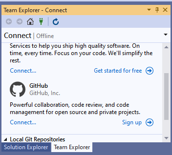
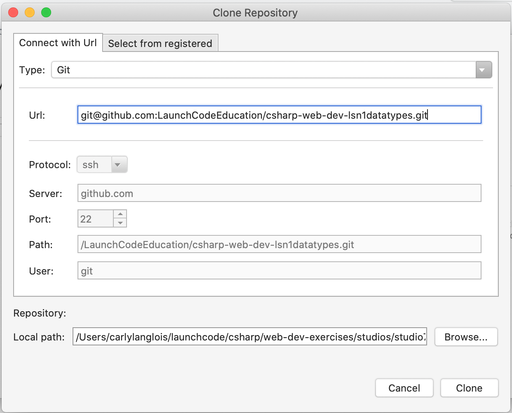

1.6. Cloning a C# Project
The steps here walk you through setting up a repository that you’ll use to study example code and work on coding exercises.
Visit the LaunchCodeEducation/csharp-web-dev-datatypes repository page and fork the repository into your own GitHub account by selecting Fork from the top right of the page.
1.6.1. Windows Users
From within Visual Studio, choose the Team Explorer tab near the bottom of the Solution Explorer pane. If you don’t see this tab, you can open it via the application menu: View > Team Explorer. The first time you do this, you will need to click Connect… and then sign in to GitHub.
Visual Studio Team Explorer Connect to GitHub
Tip
If you are currently viewing the project opener pane, you can open the editor to access the Team Explorer tab by choosing “Continue without code ->”.
Once connected, select Clone from the GitHub section of the Team Explorer and select your
csharp-web-dev-datatypescopy from the modal window. Be sure to change the Path field to the location you would like the project to live, ideally inside of a folder you’ve been using to store other projects.
1.6.2. Mac Users
With Visual Studio open, select Version Control > Clone Repository from the menu bar.
This opens a window to connect to a remote repository. Copy the address for your forked exercises repository and enter it into the url section of the form. The rest of the form fields will auto-populate:
Visual Studio for Mac checkout Github repository
Note
We use SSH to clone the repo above, but you can use HTTPS if you prefer it. If you’re not sure which you want to use, that’s ok too.
Enter the Target Directory where you would like to keep your project
Tip
Make this a new, empty folder inside of your designated C# practice directory.